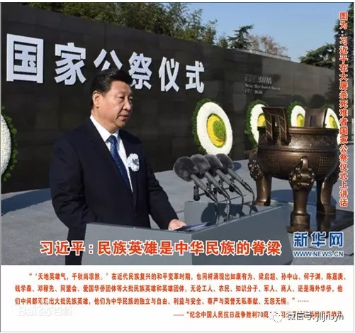
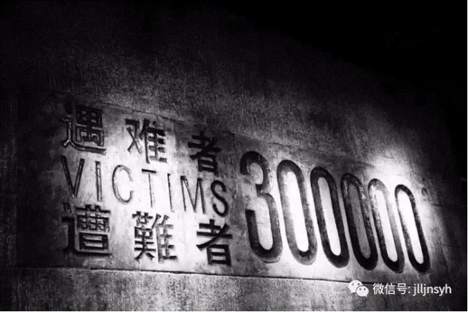

今天是
2017年12月13日
“南京大屠杀”80周年纪念日，
第四次南京大屠杀死难者国家公祭日。
时间不能抚平所有的悲伤，记忆依旧是如此的深刻而痛楚，国家公祭日的设立，是缅怀过去，更是抚慰民心、顺应民意，在这一天，我们感念逝者，还生命以尊严。唯其不可忘却，他们才能在民族记忆和历史长河中成为永恒。
2014年2月27日，中国十二届全国人大常委会第七次会议通过决定，将每年的12月13日设立为南京大屠杀死难者国家公祭日。决议的通过，使得对南京大屠杀遇难者的纪念上升为国家层面。国家公祭日的设立表明中国人民反对侵略战争、捍卫人类尊严、维护世界和平的坚定立场。
2014年2月27日，中国十二届全国人大常委会第七次会议通过决定，将每年的12月13日设立为南京大屠杀死难者国家公祭日。决议的通过，使得对南京大屠杀遇难者的纪念上升为国家层面。国家公祭日的设立表明中国人民反对侵略战争、捍卫人类尊严、维护世界和平的坚定立场。
中国人民要庄严昭告国际社会：今天的中国，是世界和平的坚决倡导者和有力捍卫者，中国人民将坚定不移维护人类和平与发展的崇高事业，愿同各国人民真诚团结起来，为建设一个持久和平、共同繁荣的世界而携手努力。